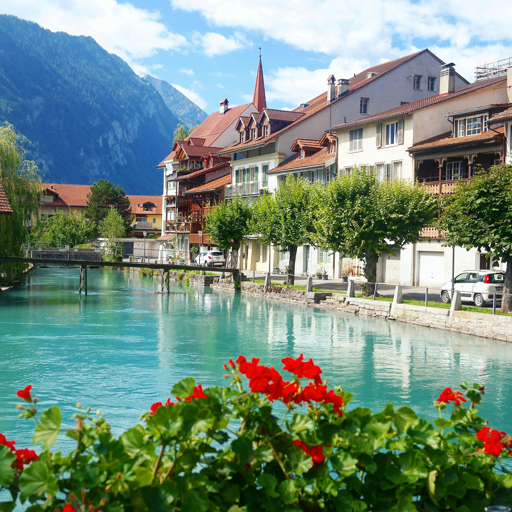

Zürich – City Highlights Tour
Altstadt, Zürichsee, Bahnhofstrasse & Lindenhof – perfekte City-Entdeckung.
Jetzt Buchen
Luxuriöse Tagesausflüge zu den schönsten Orten der Schweiz – individuell geplant, komfortabel chauffiert und perfekt organisiert für ein exklusives Reiseerlebnis.
Private, flexible und luxuriöse Sightseeing-Touren – perfekt für Gäste, die die Schweiz auf höchstem Niveau entdecken möchten. Unsere Chauffeure bieten erstklassige Ortskenntnis, Premium-Komfort und maximale Flexibilität.
Individuelle, frei anpassbare Routen nach Wunsch
Luxusfahrzeuge: Mercedes S-Class, V-Class, Sprinter
Professionelle Chauffeure mit exzellenter Ortskenntnis
Stopps für Fotos, Aussichtspunkte & Restaurants jederzeit möglich
100% private Tour – diskret, sicher und ungestört
Jede Sightseeing-Tour wird individuell kalkuliert – basierend auf Route, Dauer, Fahrzeugkategorie und persönlichen Wünschen. Transparent, fair und ohne versteckte Kosten.
Von 2-stündigen City-Tours bis ganztägigen Alpen-Erlebnissen.
Stadt, Seen, Alpenpässe oder weite Panorama-Strecken.
Von Mercedes S-Class bis zur Economy-Kategorie.
Ideal für Solo-Reisende, Paare und Gruppen bis 16 Personen.
Restaurants, Aussichtspunkte, Foto-Locations und Pausen.
Luxus, Komfort und Stil – entdecken Sie unsere exklusiven Mercedes-Modelle für Business, Events und private Transfers.
Komfort muss nicht teuer sein – entdecken Sie unsere preisbewusste Fahrzeugflotte für stilvolle, sichere und bequeme Fahrten in der ganzen Schweiz.
Unsere Economy-Fahrzeuge bieten dieselbe Pünktlichkeit und Qualität wie unsere Limousinen, nur zu einem günstigeren Preis – perfekt für Geschäftsreisende, Familien und alle, die klug sparen wollen.
Unsere Sightseeing Touren beinhalten Hotelabholung, flexible Route nach Wunsch, Foto-Stopps, Premium-Fahrzeuge (Luxury & Economy Flotte), lokales Insider-Wissen, kostenloses Wasser, komfortables Reisen und eine individuell abgestimmte Reiseplanung.
Besonders gefragt sind: Zürich City Tour, Luzern & Vierwaldstättersee, Interlaken – Lauterbrunnen – Jungfrau Region, Zermatt & Matterhorn, Geneva Lake Tour und Rheinfall – Stein am Rhein. Wir erstellen jede Tour individuell nach Ihren Interessen.
Ja. Jede private Tour kann vollständig an Ihre Wünsche angepasst werden – inklusive Restaurants, Aussichtspunkten, Seen, Dörfern, Museen oder spontanen Foto-Stopps.
Typische Touren dauern zwischen 3 und 10 Stunden. Ganztages-Touren, Mehrtagestouren oder individuell abgestimmte Programme sind jederzeit möglich.
Für Paare empfehlen wir die Mercedes S-Klasse, für Familien die V-Klasse und für grössere Gruppen den Executive Sprinter. Zusätzlich bieten wir eine Economy-Flotte für preisbewusste Gäste.
Der Preis hängt ab von Dauer, Distanz, Fahrzeugkategorie und Anzahl Gäste. Jede Tour wird individuell berechnet – ganz ohne versteckte Gebühren. Ein unverbindliches Angebot erhalten Sie in wenigen Minuten.
Ja. Auch bei Regen können alle Touren durchgeführt werden. Bei extremem Wetter passen wir die Route sicherheitsorientiert an oder bieten Alternativen an.
Ja. Wir bieten Kindersitze, seniorenfreundliche Ein- und Ausstiegshöhen, ruhige Fahrweise, Getränke, Pausen und flexible Stopps für jede Altersgruppe.
Absolut. Unsere Chauffeure sind flexibel – Sie können die Dauer verlängern, Ziele ändern oder zusätzliche Orte besuchen, solange die Tourzeit dies erlaubt.
Wir holen Sie überall ab: Hotel, Flughafen Zürich/Genf/Basel, Bahnhof oder Privatadresse. Die komplette Tour beginnt und endet an Ihrem gewünschten Ort.
Entdecken Sie die Schweiz mit einem privaten Chauffeur – individuell, flexibel und komfortabel. Ideal für Zürich, Luzern, Interlaken, Jungfrau Region, Zermatt, Rheinfall und alle weiteren Highlights der Schweiz.
Veloura Transfers bietet exklusive private Sightseeing Touren in der Schweiz – perfekt für Reisende, die Komfort, Flexibilität und persönliche Betreuung wünschen. Mit einem professionellen Chauffeur entdecken Sie die schönsten Regionen des Landes, geniessen freie Stopps und erleben die Schweiz individuell, entspannt und ohne Zeitdruck.
Die Schweiz bietet eine aussergewöhnliche Vielfalt an Sehenswürdigkeiten. Zu den beliebtesten Routen gehören die Zürich City Tour mit Altstadt, Lindenhof und Uetliberg, die malerische Luzern–Vierwaldstättersee Tour, Interlaken mit Lauterbrunnen und Jungfrau Region sowie ikonische Destinationen wie Zermatt und das Matterhorn. Unsere Fahrer kennen alle Highlights, Aussichtspunkte, Foto-Locations und versteckten Orte.
Im Unterschied zu Gruppenreisen profitieren Sie bei einer privaten Chauffeur-Tour von völliger Flexibilität: Sie bestimmen Route, Stopps und Zeitplan. Unsere Gäste schätzen insbesondere die komfortablen Fahrzeuge, Foto-Stopps, persönliche Empfehlungen, lokale Einblicke und stressfreies Reisen.
Ob luxuriöse Mercedes S-Klasse für Paare, V-Klasse für Familien oder der komfortable Sprinter für Gruppen – unsere Flotte bietet für jede Tour das passende Fahrzeug. Zusätzlich steht eine Economy-Flotte für preisbewusste Reisende zur Verfügung.
Jede Tour wird individuell geplant: Von kurzen 3–4-Stunden-City-Tours bis zu 10-Stunden-Tagesausflügen oder mehrtägigen Touren durch mehrere Kantone. Unsere Chauffeure passen die Route spontan an – abhängig vom Wetter, persönlichen Interessen oder spontanen Stopps.